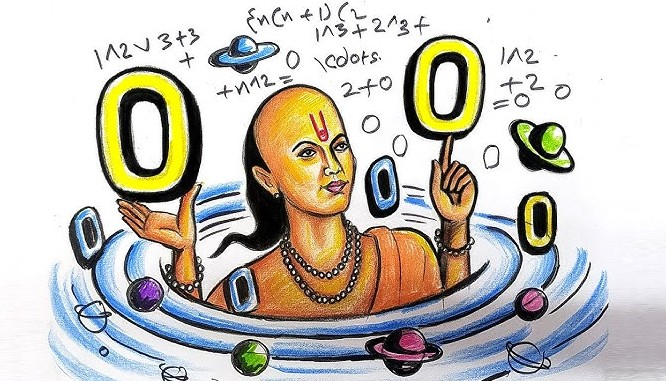

आर्यभटः / Aryabhatta ~ गणितम् एवं खगोलशास्त्रम् / Mathematics and Astronomy

आर्यभटः प्राचीनभारतस्य प्रसिद्धः गणितज्ञः तथा खगोलशास्त्रज्ञः आसीत्। सः ४७६ तमे वर्षे कुषुमपुरे (अधुना पाटलिपुत्रे) जन्म प्राप्नोत्। तेन रचितं "आर्यभटीयम्" नामकं ग्रन्थम् गणितखगोलविज्ञानयोः एकं महत्त्वपूर्णं कृतिं मन्यते। अस्मिन् ग्रन्थे सः दशमलवपद्धतेः उपयोगं प्रदर्शितवान्, π (पाइ) संख्या का मानं ३.१४२८ इत्यादिना समीचीनं निर्दिष्टवान् च। पृथिवी सूर्यस्य चारः न भवति, अपि तु सा स्वस्य अक्षे परिभ्रमति इति विचारः अपि तेन एव प्रतिपादितः। तस्य विचाराः एवं सिद्धान्ताः आधुनिकविज्ञानस्य पूर्वपीठिका इव दृष्टुं शक्यन्ते।
Aryabhatta was a renowned mathematician and astronomer of ancient India. He was born in 476 CE in Kusumapura (modern-day Patna). He authored the treatise "Aryabhatiya", which is considered a significant work in mathematics and astronomy. In this text, he demonstrated the use of the decimal number system and accurately approximated the value of π (pi) as 3.1428. Aryabhatta also proposed that the Earth rotates on its own axis, rather than the Sun revolving around it. His ideas and theories laid the foundation for modern scientific thought.
ब्रह्मगुप्तः / Brahmagupta ~ खगोलशास्त्र एवं गणित / Astronomy and Mathematics
Brahmagupta (598–668 CE) authored the "Brahmasphutasiddhanta", where he formally introduced the use of zero in calculations, solved quadratic equations, used negative numbers, and studied arithmetic progressions.
Charaka was a great ancient Indian scholar of Ayurveda. His work, the "Charaka Samhita", is regarded as a foundational text of Ayurvedic medicine. It offers extensive knowledge on anatomy, diagnosis, herbal treatment, and lifestyle guidance. Charaka also provided deep insights into mental health.
Kanāda was the founder of the Vaisheshika school of Indian philosophy, which proposed early atomic theory. He theorized that everything in the universe is composed of atoms (aṇu), a concept that predates modern atomic theory.
Bhāskaracharya was a celebrated 12th-century mathematician and astronomer. His poetic text "Līlāvatī" makes mathematics engaging. In "Siddhānta Śiromaṇi", he explored advanced astronomy.
वराहमिहिरः षष्ठशताब्दे सुप्रसिद्धः ज्योतिषाचार्यः तथा खगोलशास्त्रज्ञः आसीत्। तेन रचितं "बृहत्संहिता" ग्रन्थः खगोलविज्ञानं, वास्तुशास्त्रं, वृष्टिविज्ञानं च समाहितं करोति।
Varāhamihira was a renowned 6th-century astronomer and astrologer. His encyclopedic work "Bṛhatsaṁhitā" covers astronomy, meteorology, architecture, and more.
निष्कर्षः / Conclusion ~ आधुनिकविज्ञानस्य मूलं / Roots of Modern Science
Ancient Indian science laid the foundation for modern disciplines. Be it mathematics, astronomy, physics, or medicine—our sages made pioneering contributions that continue to influence global science.